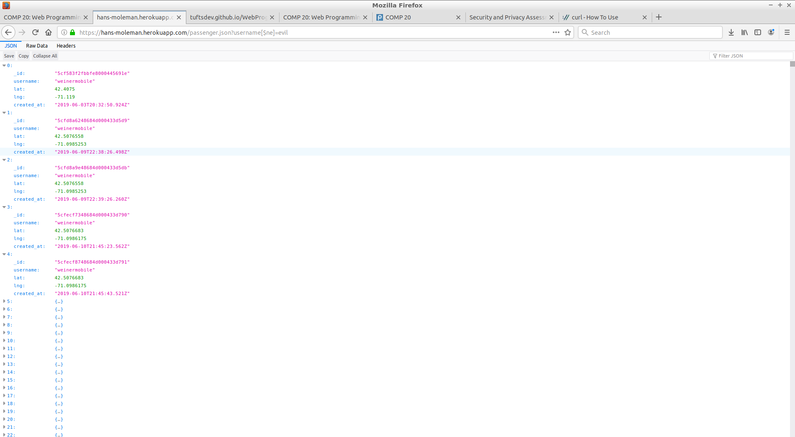
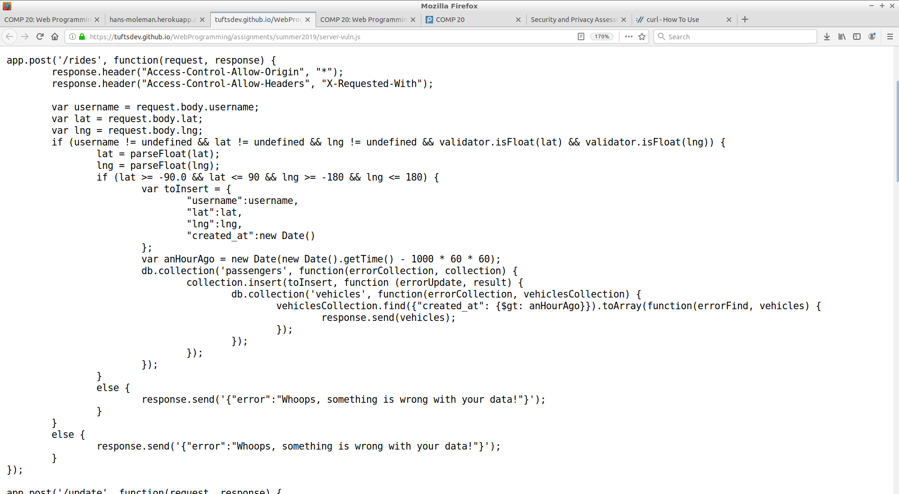
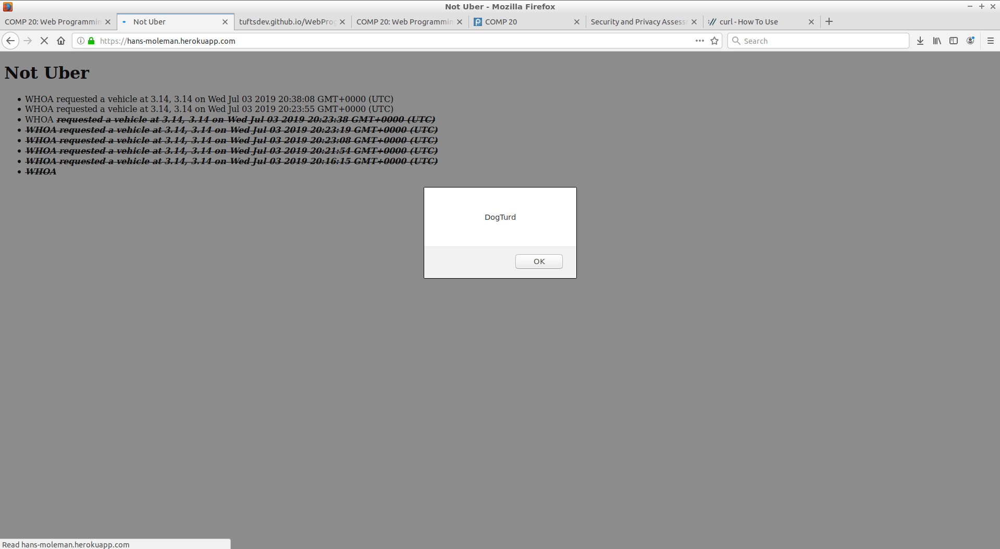

Introduction
I was hired to perform an assessment of the security and privacy vulnerabilities of a ride-hailing service. Specifically, I assessed the server that interfaces with the database of vehicle requests.
Methodology
In order to test this system, I used the freely avaiable tool curl and web browsers (Firefox and Chrome).
Abstract of Findings
This application needs to be shut down immediately. The main page has already been infected with malicious code, the entire contents of the databases on customers and vehicles is visible, and once a user has access, so does any future site they visit.
The issues mostly stem from a complete lack of validation on user input. Malicious users are able to chose usernames that the website stores as code, which is then read and executed by the browser of the end-user. Right now, these attackers have only created a series of annoying (but harmless) pop-up messages, but there is nothing stopping them from inserting more malicious code that could potentially invite ransomware, turn the computer into part of a botnet, or just crash it completely.
Issues Found
- Issue: Database Query Manipulation
- Location: /vehicle.json and /passenger.json
- Severity: High
- Description: Unsanitized user input is being processed directly by the server. Thus, sending a parameter that is valid query for searching the database can alter the effect of the query. As seen in the screenshot, setting the query to search for anything OTHER than a user named "evil" returns the entire database.
- Proof of Vulnerability:
- Resolution: User input should be properly sanitized. Even a simple if-statement to check for non-alphanumeric characters would help close this vulnerability.
- Issue: CORS Enabled
- Location: /rides and /update
- Severity: Medium
- Description: I discovered this vulnerability when I switched to white-box testing and examined the code underlying the server. Although this server does not use cookies for authentication, which is a problem in and of itself, enabling Cross-Origin Resource Sharing for *any* site is a real security risk, as it would allow any other site to have access to these credentials if the user is logged in. Especially for administrator accounts, this is a real concern.
- Proof of Vulnerability: 
- Resolution: Instead of allowing CORS for all sites, allow it for only a selected whitelist that are approved to use the service, with an option for other APIs to request access.
- Issue: Cross-Site Scripting
- Location: /rides
- Severity: High
- Description: This vulnerablility has already been taken advantage of. The database is infected with malicious code that alters the intended readout of the index (main page). I discovered that this volnerability existed when I first visited the page and was greeted by a series of pop-ups (an example shown below). This is clear proof that the user input has not been sanitized in this route either, except the consequences are much more dire. There is nothing stopping an attacker from inserting something more malicious than pop-ups or rickrolls into the website.
- Proof of Vulnerability: 
- Resolution: Sanitize user input. Disallow special characters in usernames and limit the number of characters. Or better yet, keep screen names and user ids separate, so that users cannot directly input data at all.
Conclusions
Is this server still running? It shouldn't be. Take the whole thing down, scrub the database, and start from scratch. Sanitize user input. Even just a simple restriction on usernames to limit them to alphanumeric characters would lessen the risk. There are also ready-made, open-source, and free security scanners to help you catch these issues before deployment next time.